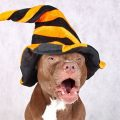
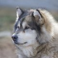
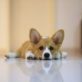
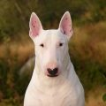
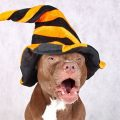
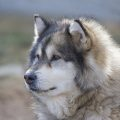
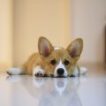
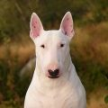

БЕРНСКИЙ ЗЕННЕНХУНД
АРГЕНТИНСКИЙ ДОГ
АНГЛИЙСКИЙ БУЛЬДОГ
АМЕРИКАНСКИЙ ПИТБУЛЬ ТЕРЬЕР
АМЕРИКАНСКИЙ БУЛЬДОГ
АЛЯСКИНСКИЙ МАЛАМУТ
АЛАБАЙ ИЛИ СРЕДНЕАЗИАТСКАЯ ОВЧАРКА
АКИТА-ИНУ
ВЕЛЬШ-КОРГИ
БУЛЬТЕРЬЕР
БОКСЁР
БЕРНСКИЙ ЗЕННЕНХУНД
АРГЕНТИНСКИЙ ДОГ
АНГЛИЙСКИЙ БУЛЬДОГ
АМЕРИКАНСКИЙ ПИТБУЛЬ ТЕРЬЕР
АМЕРИКАНСКИЙ БУЛЬДОГ
АЛЯСКИНСКИЙ МАЛАМУТ
АЛАБАЙ ИЛИ СРЕДНЕАЗИАТСКАЯ ОВЧАРКА
АКИТА-ИНУ
ВЕЛЬШ-КОРГИ
БУЛЬТЕРЬЕР
БОКСЁР
ДОМАШНИЕ ПОРОДЫ СОБАК
Доподлинно неизвестно, когда и как эти животные стали неотъемлемой частью человеческой жизни, но и без доказательств ясно, что собака в качестве компаньона и друга – это лучшее, что могло произойти с людьми. Эти удивительные создания, преподнесенные нам в дар щедрой судьбой, ошеломляют разнообразием особей.
Взгляните на породы собак с фотографиями – скажем, на миниатюрного чихуахуа, с легкостью умещающегося в кармане: на фоне гигантского сенбернара ростом с хорошего пони эта кроха выглядит просто комично. И таких ярких контрастов среди представителей собачьего племени не счесть.
Как случилось, что именно это создание, изначально не отличающееся чрезмерным дружелюбием, выбрал человек в качестве своего первого спутника? Очевидно, что некоторые хищники из собачьего семейства прельстили людей своими уникальными охранными качествами. Рассмотрите хоть современные породы собак с фотографиями – и беглого взгляда достаточно, чтобы заподозрить в отличных сторожевых свойствах овчарок, ротвейлеров или доберманов, верно? Так и первобытный человек – где интуитивно, где опытным путем – из различных четвероногих хищников выделил и со временем выдрессировал собаку-сторожа, собаку-охотника, собаку-проводника, собаку-друга.